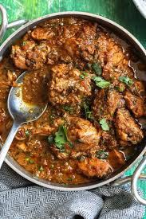

What inspired me ?
The idea i got this is to serve the food in low prices.
Description
The ere are so many basic and good receipes. use the coupan code:BhaaiFans
Popular Receipes
Chicken curry
description
Chicken curry is a diverse dish, generally featuring chicken pieces simmered in a spiced sauce. It's a staple in Indian cuisine, with numerous regional variations, and is also popular in other Asian countries.readmore
Mutton curry
description
Mutton curry is a flavorful and rich dish made with goat or lamb meat, cooked in a spiced gravy. It's a popular dish in Indian cuisine, with variations found across the subcontinent and in the Caribbean. readmore

Fish curry
Description
Fish curry is a flavorful dish featuring fish simmered in a spiced broth or sauce, commonly enjoyed with rice. It's a popular dish in many regions, particularly coastal areas, and varies in preparation methods and ingredients.readmore